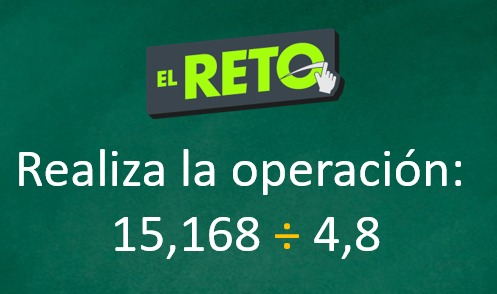

Mayo
Sesión 1
Analizamos los gastos de una familia empleando operaciones con números naturales y decimales (división)
Descargar VideoSesión 2
Analizamos los gastos de una familia empleando operaciones con números naturales y decimales (practica)
Descargar Video